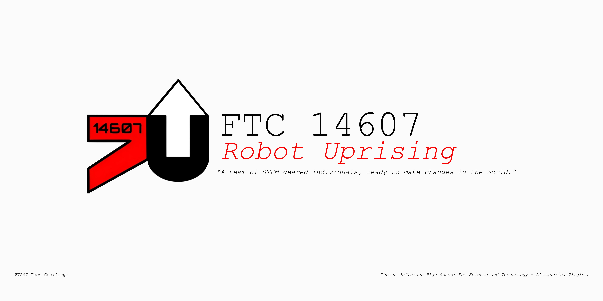
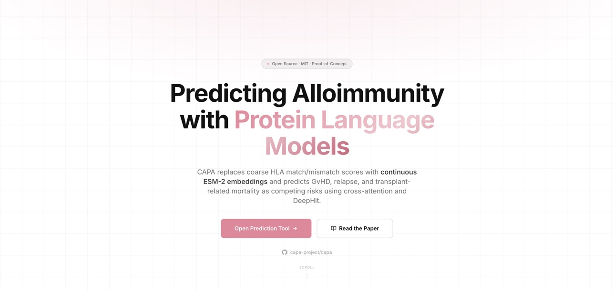
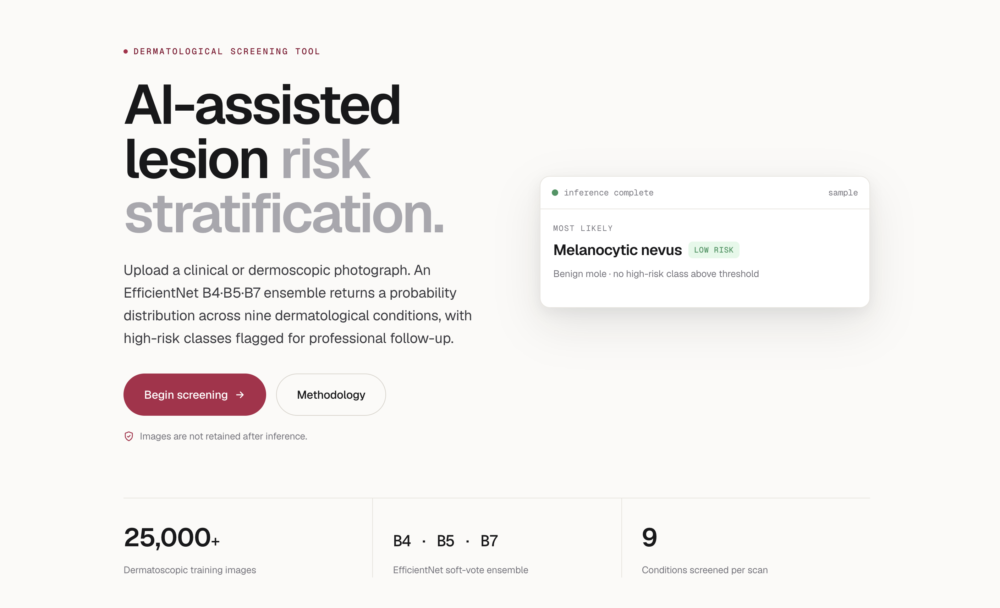
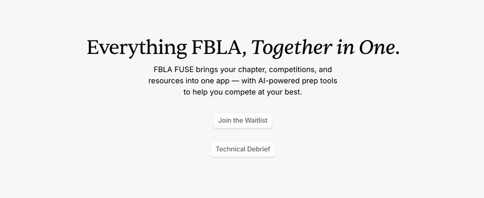

Working on CAPA, this site, and a few visual systems that make technical work feel more personal.
/ now playing my life
life
A small room for the non-resume parts: what I am listening to, where I have been, and the pieces of my week that explain the person behind the projects.
statebuilding + school
rotationlate night code
camera roll2025-2026
moodfocused / restless
/ live status
what is Shawn doing right now?
Balancing TJ coursework with research, writing, and the parts of school that do not fit neatly into a resume.
Keeping one playlist on rotation while coding, walking, editing, and thinking through the next thing.
Photos, friends, gym, robotics, piano, late-night notes, and trying to document more of it.
camera roll
replace captions anytime




ideaTurn this into a live now page that changes every month.
musicYour real Spotify playlist is embedded here now.
photosUse candid images: friends, travel, lab, robotics, food, fits.
voiceKeep the captions short so it feels personal, not like a resume.